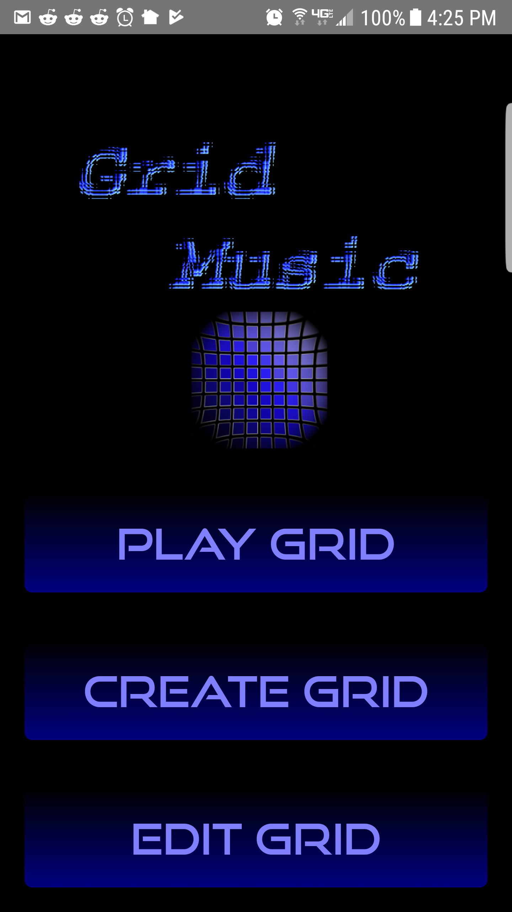

- Solaris
- Windows
- Android
- Unity
- Git
- Visual Studio
- Android Studio
Stephen Docy
Software Developer
Beaverton, OR
I truly have had a life-long passion for designing software to solve all kinds of challenging problems.
My professional background in Systems Programming has taught me how to approach complex, technical
problems and to deliver solutions which are clean, robust and maintainable. In my free-time, I have
been exploring the capabilities of Unity and learning how to develop mobile apps on Android with Java
and XML. Working with Unity and Android, I get to relax a little and let my creativity and inquisitive
nature take over and guide what I create.
Have comments or questions about one of my projects or my Systems Programming background,
or have something going on that could use a seasoned coder?
Drop me a line at
Featured Project
Grid Music - A music player for Android which allows users to create highly customizable, graphical music playlists
- C
- C++
- C#
- Java
- Perl
- UNIX Shell
- XML
- HTML5
- CSS
Android Development


- Awarded Udacity Android Development Nanodegree program scholarship
-
- One of the top 10% students in the GrowWithGoogle program that was awarded a scholarship for the full Udacity Android Development
Nanodegree program at the end of the introduction program.
- Chosen as a Student Leader in recognition of support and assistance provided to other students.
- One of the top 10% students in the GrowWithGoogle program that was awarded a scholarship for the full Udacity Android Development
Nanodegree program at the end of the introduction program.
- Projects :
-
- Developed a feature-rich quiz app for the final project, utilizing dynamic view resizing to make efficient use of limited screen size.
Project Webpage Project Repo

- Completed phase 1 of the course early and continued to learn by porting a BlackJack game I had developed with Unity and C# to Android using XML and Java.
Project Webpage Project Repo
- Designed a music player app which features user-definable, grid-based playlists which allow users to create highly
customized music playlists. The class project did not include a requirement to actually play music (we hadn't learned how to do that
yet), but I really love how the app came out and have been continuing to work on it, getting it to actually play music from your phone.
Project Webpage Project Repo
- Our next project was a tour guide app using Fragments, ViewPagers and TabLayouts to provide graceful access to multiple pages of information.
I'm sure Portland has more than enough apps devoted to it, so I created an app for visiting Mordor.
Project Webpage Project Repo
- Implemented an app to download music cover art. My music player, Grid Music, is coming along very well, but its very
graphical nature requires a full set of music cover art in order to be fully appreciated. So when I learned how to perform network
operations, including retrieving and parsing JSON data, I immediately began designing an art downloader. Incorporating many new,
advanced Android development techniques I had just learned, the prototype turned out quite well and is ready to be integrated into
Grid Music.
Project Webpage Project Repo
- Developed a feature-rich quiz app for the final project, utilizing dynamic view resizing to make efficient use of limited screen size.
Games and Simulations
- Data Structures and Algorithms Tutorial
- Developed proof of concept for graphical tutorial for Computer Science data structures and algorithms. Algorithm execution and data structure
manipulation are graphically displayed, with support for continuous and step-by-step execution.
Project Webpage Project Repo
- BlackJack game
- Developed fully functional, feature-rich Blackjack game. Plans to eventually morph game into hybrid Blackjack / trading card game.
Project Webpage Project Repo Play It
- Battle Simulator
- Implemented battle simulator to investigate game object interaction and to push limits of game scalability. Current implementation supports
4000 autonomous units with each unit controlling its own movement, targeting and attacking.
Project Webpage Project Repo
- Gangs of Mordor
- Designing UI driven game in which a young Orc captain tries to maintain an outpost on a remote border of Mordor after Sauron's defeat.
Project Webpage Project Repo
Systems Programmer
Expanded my role as technical lead for Oracle Solaris Cluster product, coordinating multi-group efforts to deliver highly available storage solutions with short hiatus to research low latency remote shared memory communication prototype.
- Investigated technical issues and gaps in Solaris physical to virtual migration tools and outlined Cloud migration path for customers running
on legacy Oracle hardware; key component in Oracle's new focus on Cloud solutions.
- Returned to Solaris Cluster and immediately addressed backlog of bugs in global devices area, significantly reducing overall count, including
identifying and resolving 2 critical bug fixes.
- Researched application of software-on-silicon and hypervisor technologies, providing low latency interprocess, inter-node communication.
- Designed and implemented Coherent Memory Interface library based on evolving specification, serving as user API for managing remote shared memory.
- Built event framework used to deliver asynchronous errors to CMI client applications, allowing RMA device driver to communicate intricate
error conditions to users.
- Coordinated with Oracle Solaris Cluster QA and EMC engineers, investigating, defining and resolving issues related to supporting EMC VPLEX on
Oracle Solaris Cluster.
- Served as C-team tech lead, driving delivery of technical content for Oracle Solaris Cluster's 3.3u2 and 4.1 releases, including integration
of new features and meeting Solaris Cluster's aggressive quality requirements.
Technical lead for several clustering projects in Sun Cluster Global Data and Devices group with significant experience integrating storage-related technologies. Designed and implemented features and enhancements to meet product requirements. Worked with Quality Assurance debugging and addressing code defects. Provided technical input to product publications team delivering user documentation for new features.
- Led team which defined Sun Cluster requirements for Network Attached Storage and worked closely with internal (Oracle ZFSSA) and external
(NetApp) storage teams, delivering support for new NAS products; solutions consistently requested by customers.
- Designed extensible Network Attached Storage failure fencing framework, allowing support for new NAS devices to be implemented with minimal
development effort.
- Delivered support for storage replication technology, key component in Sun Cluster’s Disaster Recovery Solutions through collaboration with
EMC and Hitachi engineering teams.
- Authored Sun Cluster's multi-pathing failure fencing specification, allowing storage partners to deliver support for multi-pathing device
drivers (Solaris MPxIO, Veritas DMP, EMC PowerPath); key technology for improving storage device fault tolerance.
- Improved availability of Sun Cluster by implementing support for Sun's Dynamic Reconfiguration framework, allowing I/O boards and Kernel
Cage Memory to be configured on live cluster systems.
- Designed Sun Cluster 3.0's failure fencing support, utilizing SPC-3 Persistent Group Reservations, offering greater reliability and storage
configuration flexibility than fencing offered by Sun Cluster 2.2.
- Implemented support for Veritas Volume Manager, allowing Sun Cluster 3.0 product to aggressively compete with Veritas Cluster Server.
Member Portland Indie Game Squad
Member UnityPDX
Mentor Hillsboro High School Game Programming Club
Personal Interests
- game design
- aikido
- poker
- sci-fi and fantasy
- music
- astronomy
- mathematics
- sharks